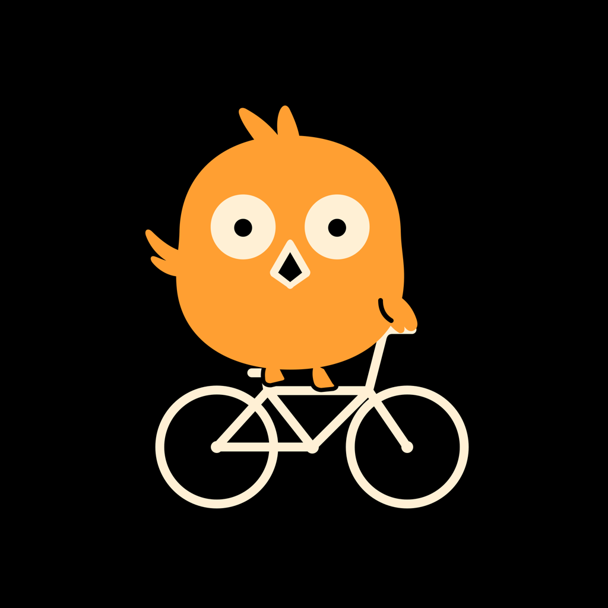

COUCOU BIKE
骑行时，有一只鸟在你耳机里报数。
速度、距离、心率，说给你听。
不卖货，不打广告，不搞歪门邪道。你买的是软件本身。
本地优先，健康兜底，随时导出 Markdown。你的数据属于你。
深度打通苹果健康，记录按最兼容的方式写入，不另建孤岛。
代码公开仅限自用；商店版一次付费，永久使用。
布谷鸟是最老的提醒器：黑森林的钟每整点跳出来报一次时；在中国民间， 它的叫声就是"播谷"，提醒农人下地；法语里 coucou 既是它的叫声， 也是熟人之间那句轻快的"嗨～"。 每公里跟你说一句话的骑行 App，和它属于同一个物种。
咕咕！该出发了。